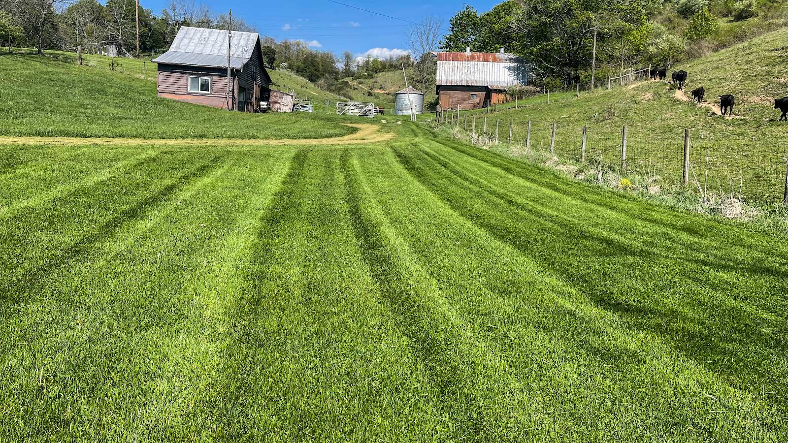
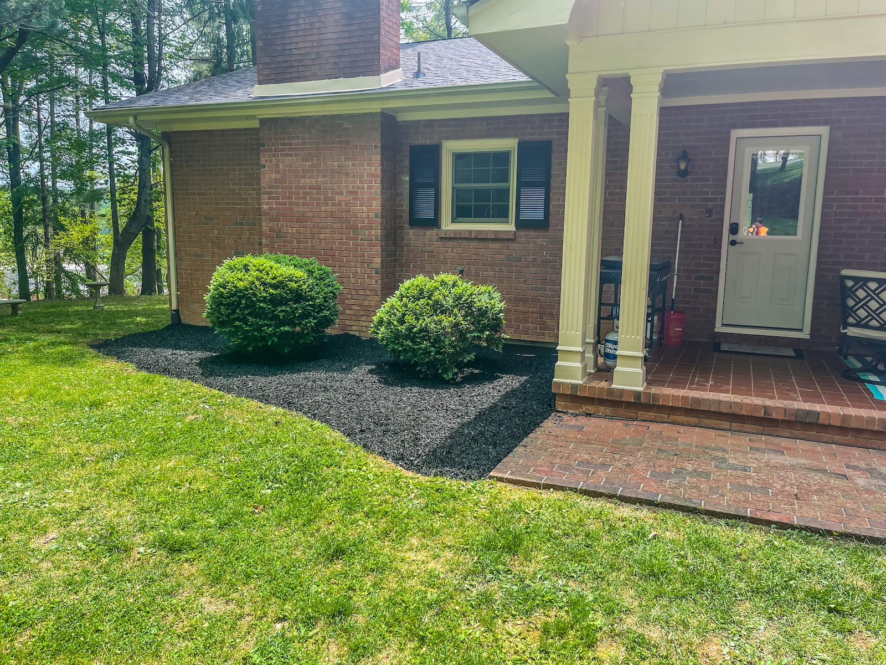
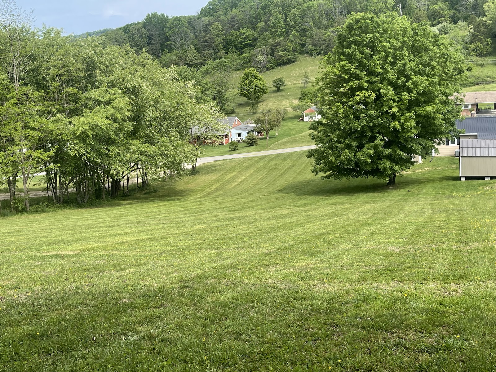
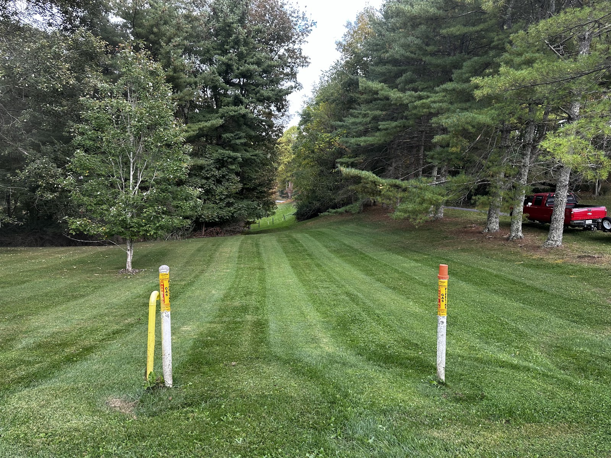
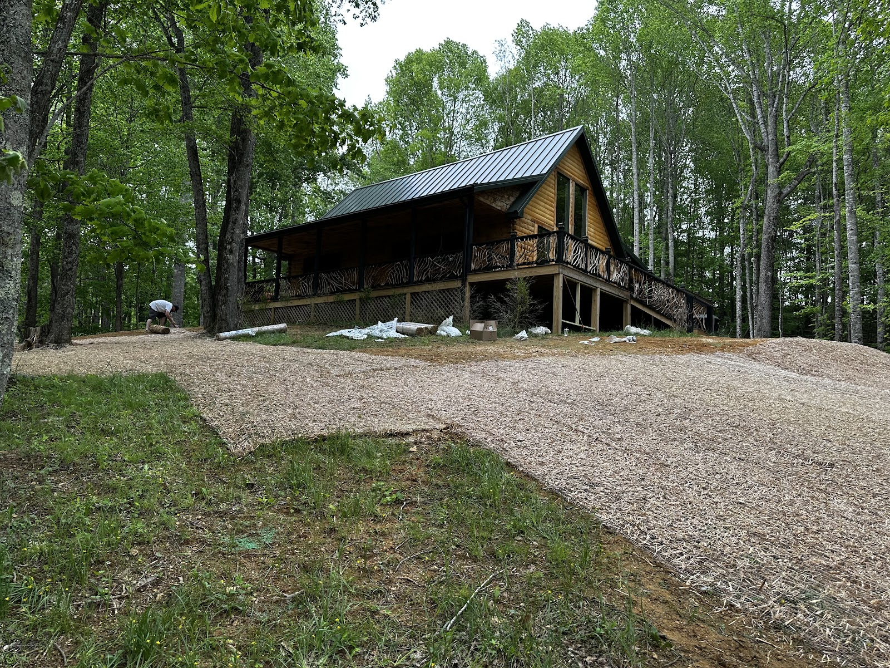

From weekly mowing to mulch, hillsides and cleanup, Freeman Mowing Service keeps Marion-area yards looking their best.

Tell us what you're after — mowing, mulch, a hillside, a cleanup. We answer and talk it through.
Often on short notice. We look at the property and let you know exactly what it needs.
Clean, reliable work you can count on — the reason folks around Marion keep us on the schedule.
Lawn and landscaping work for homes and properties around Marion.
Regular mowing, edging and trimming that keeps the lawn crisp and even all season.
Fresh mulch and clean, defined beds — around bushes, driveways and the front of the house.
Mowing and landscaping the steep, awkward areas other crews would rather skip.
Gravel, drives and grading to keep access clean and water moving the right way.
Clearing and cleanup to open up a property or get a site ready.
Leaf and debris cleanup to reset the yard between seasons.




“We live on a little over 1 acre. They landscaped and laid mulch on a huge hillside, along my driveway, around all my bushes.”
“Jeff came out on short notice and did a great job with my lawn. Great price and very reliable.”
Based on N Main St in Marion, VA — serving Marion and the surrounding area.
| Monday | 9:00 AM – 9:00 PM |
| Tuesday | 9:00 AM – 9:00 PM |
| Wednesday | 9:00 AM – 9:00 PM |
| Thursday | 9:00 AM – 9:00 PM |
| Friday | 9:00 AM – 9:00 PM |
| Saturday | 9:00 AM – 9:00 PM |
| Sunday | Closed |
Call or text Freeman Mowing Service — we're quick to answer and happy to come take a look.